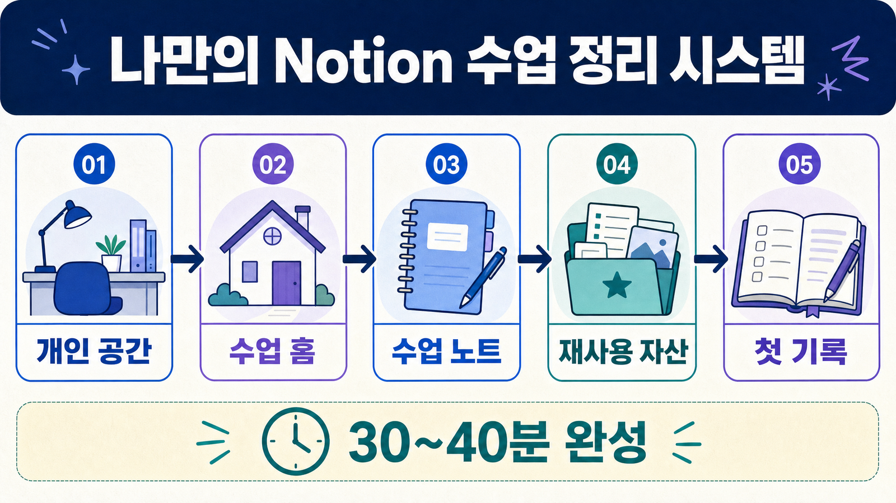

작성본
내 판단·프롬프트·오류·결과·다음 행동을 기록합니다. 실제 개인정보나 기관 내부자료는 넣지 않습니다.
강사가 제공한 시작 파일을 편집 가능한 내 Notion 페이지로 가져오고, 공개 학습 대시보드와 비공개 작업실을 안전하게 나누는 순서입니다.

폴더와 파일명으로 읽기 자료와 작성 문서를 먼저 구분합니다.
| 위치·파일 | 역할 | 수강생 행동 |
|---|---|---|
README.md | 파일 목록과 사용 순서 | 먼저 읽기 · 어떤 파일을 쓸지 확인 |
learner/M05-D01.md | 일자별 수강생 가이드 | 읽기 중심 · 개인 학습노트로 가져오기는 선택 |
starter/*-starter.md | 차시별 내용을 이어 쓰는 시작 문서 | 직접 작성 · 오늘의 기본 작업 파일 |
templates/*-practice-template.md | 빈 실습 양식 | 직접 작성 · 시작 파일 대신 또는 함께 사용 |
templates/*.md | 체크리스트·설계 카드·기록표 | 필요한 파일만 작성 |
solutions/*-complete-example.md | 완성 구조 비교 자료 | 참고만 하기 · 내 답으로 덮어쓰지 않기 |
starter/*-source-pack.md | 교육용 가상 원자료 | 입력 자료로 읽기 · 원문을 임의 수정하지 않기 |
starter/*-starter.md 한 개를 먼저 가져오고, 강사가 안내한 templates/*.md만 추가합니다. 모든 파일을 한꺼번에 가져올 필요는 없습니다.내 판단·프롬프트·오류·결과·다음 행동을 기록합니다. 실제 개인정보나 기관 내부자료는 넣지 않습니다.
완성 예시는 정답 복사본이 아닙니다. 구성과 사람 검수 항목만 비교합니다.
강사가 제공한 승인 채널의 자료만 사용하고, 먼저 원본 파일을 내 컴퓨터에 보관합니다.
.md로 둡니다..txt가 붙었다면 파일 탐색기에서 확장자를 .md로 수정합니다.starter와 templates만 찾습니다.Notion 공식 가져오기는 데스크톱 앱 또는 웹 브라우저에서 진행합니다.
과정 홈을 둘 개인 공간을 엽니다. 반 전체 공간이나 공개 페이지에 가져오지 않습니다.
설정(Settings) → 가져오기(Import)사이드바의 설정에서 가져오기를 열거나, 빈 페이지에서 /를 입력해 필요한 가져오기 기능을 찾습니다.
Text & Markdown 선택.md 또는 .markdown 파일을 선택합니다. 여러 Markdown 파일도 한 번에 선택할 수 있습니다.
제목·목록·코드 블록이 들어왔는지 확인하고, 페이지를 AX 과정 홈 → 수업 노트 아래로 이동합니다.
연결 프로그램 → Notion으로 여는 것은 읽기 전용 미리보기입니다. 작성하려면 반드시 가져오기 → Text & Markdown을 사용합니다.구조는 유지하고, 표시된 빈칸과 체크리스트에 나의 비식별 학습 기록을 채웁니다.
M05-D01 · 나의 실습[작성] · 내 내용으로 교체[선택] · 해당하는 항목만 남기기[확인 필요] · 근거를 찾기 전 단정 금지- [ ] · 완료하면 체크예시: · 구조만 보고 복사 금지| 작성 전 | 작성 후 |
|---|---|
[오늘 개선할 업무] | 교육용 신청 자료의 누락 항목 점검 |
[사람이 확인할 것] | 날짜·담당 역할·근거 문장·공개 가능 여부 |
[다음 행동] | 확인 필요 두 항목을 가상 원자료와 다시 대조 |
위 문장은 교육용 예시이며 실제 기관이나 개인을 나타내지 않습니다.
첫 시간에는 필요한 파일만 가져오는 경로가 가장 안전합니다.
starter/*-starter.md 선택templates/*.md 추가Text & Markdown으로 가져오기장점: 중복과 혼선을 줄이고 현재 차시 결과에 집중할 수 있습니다.
설정 → 가져오기에서 ZIP 변환 선택주의: PDF는 ZIP 변환 대상과 다를 수 있으며, 불필요한 답안 파일까지 한꺼번에 가져오지 않습니다.
개별 가져오기
가장 빠르고 오류 확인이 쉽습니다.
다중 선택
같은 가져오기에서 여러 .md를 선택할 수 있습니다.
ZIP 가져오기
강사가 묶음 구조를 안내한 경우에만 사용합니다.
Notion 페이지, 내려받은 원본 .md, 제출용 파일은 서로 다른 복사본입니다.
강사가 제공한 시작 구조입니다. 과정 폴더에 보관하고 직접 덮어쓰지 않습니다.
수업 중 계속 수정하는 내 작업 페이지입니다. 가져온 뒤 원본 파일과 자동 동기화되지 않습니다.
강사 안내에 따라 특정 페이지를 공유하거나 Markdown & CSV로 내보낸 파일입니다.
••• 메뉴 열기페이지 오른쪽 위 메뉴에서 내보내기를 찾습니다.
Export → Markdown & CSV하위 페이지가 필요하면 포함 여부를 확인합니다. 데이터베이스는 CSV로 나갈 수 있습니다.
파일명에 일자와 상태를 남깁니다. 예: M05-D01-notion-backup.
공개할 학습 요약과 비공개 작업 기록을 먼저 분리한 뒤, 안전한 페이지만 게시합니다.
AX [과정] 개인 학습 대시보드
AX [과정] 개인 작업실 (비공개)
저는 [별칭]입니다.
저는 [안전한 교육용 업무·콘텐츠 장면]을 개선하고 싶습니다.
이번 15일 동안 [만들고 싶은 결과]를 완성하겠습니다.
AI 결과는 [과정별 검증 기준]에 따라 제가 확인하겠습니다.
일자｜한 문장 배움｜공개 결과｜다음 행동 한 행만 추가합니다. 실제 기관명·부서·연락처·이메일·고객정보·내부 수치는 공개하지 않습니다.오류를 숨기지 말고 현재 상태와 시도한 경로를 기록한 뒤 강사에게 보여 줍니다.
| 문제 | 확인·복구 |
|---|---|
파일이 .txt로 저장됨 | 파일 확장자 표시를 켜고 끝을 .md로 바꾼 뒤 다시 가져옵니다. |
| Notion에서 편집할 수 없음 | 연결 프로그램으로 열기를 사용했는지 확인합니다. 읽기 전용 미리보기라면 설정 → 가져오기 → Text & Markdown으로 다시 가져옵니다. |
| 가져오기 메뉴가 보이지 않음 | 모바일이 아닌 데스크톱 앱·웹인지, 개인 워크스페이스에 페이지 생성 권한이 있는지 확인합니다. |
| 표·링크·체크박스 모양이 달라짐 | 표준 Markdown 내용이 빠졌는지 먼저 확인하고, 복잡한 서식은 Notion에서 간단히 다시 정리합니다. |
| 같은 페이지가 두 개 생김 | 가져오기는 기존 페이지 갱신이 아닙니다. 작성량과 수정 시각을 비교한 뒤 강사 확인 후 불필요한 복사본을 정리합니다. |
| 실제 업무자료를 넣어도 되는지 모름 | 넣지 않습니다. 가상·비식별 자료로 바꾸고 사람의 확인 항목만 기록합니다. |
.md로 끝납니다.starter 또는 강사가 지정한 templates 파일을 골랐습니다.Text & Markdown 가져오기를 사용했습니다.M05-D01 · 나의 실습 페이지를 다시 열고, 오늘 작성한 네 항목을 20초 안에 찾을 수 있습니다.